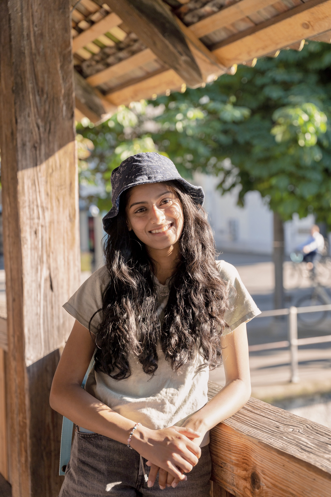

Homepage

Riya Badadare is a second year computer science major at Cal Poly SLO from Foster City, CA. She loves making art and playing soccer in her free time!
Riya Badadare is a second year computer science major at Cal Poly SLO from Foster City, CA. She loves making art and playing soccer in her free time!